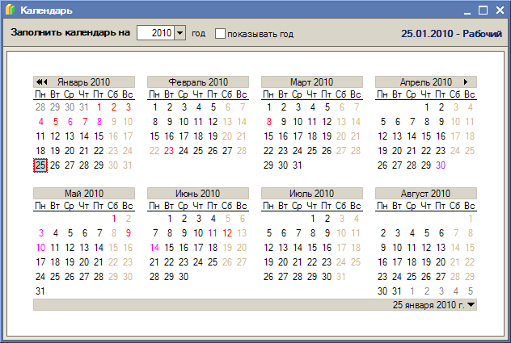

Меню Прочий учет > Учет заработной платы > Календарь

Данный регистр предназначен для хранения производственного календаря. Дни в регистре различаются по типам:
По кнопке "Заполнить календарь на... год" производится автозаполнение календаря на указанный год в соответствии со стандартным календарем. Если график выходных и праздничных дней на предприятии отличается от общепринятого, календарь необходимо откорректировать.